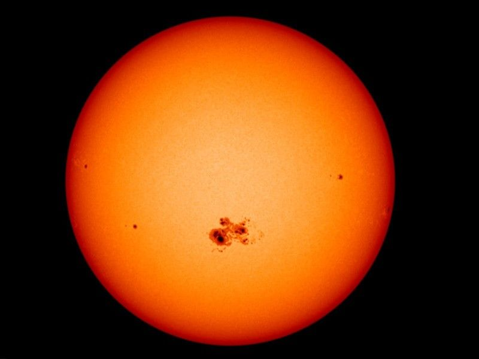
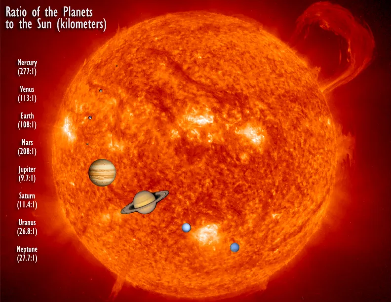
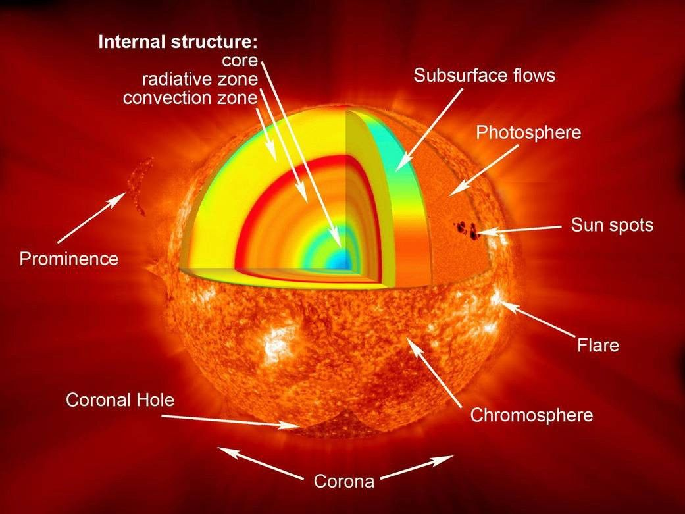
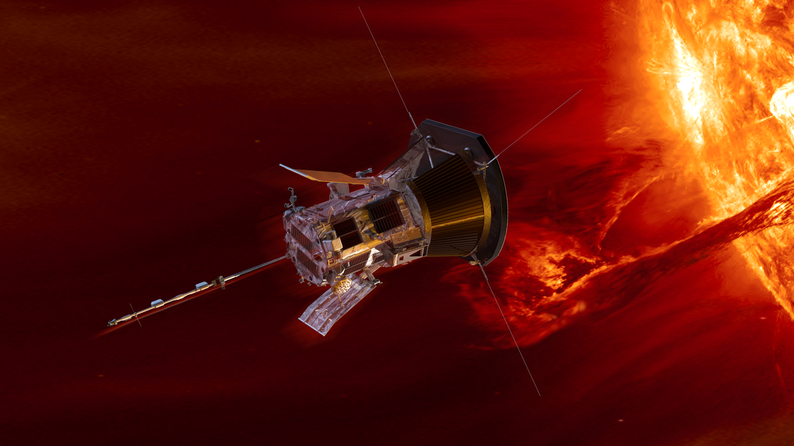

Sunspots are cooler regions on the Sun caused by a concentration of magnetic field lines.
They appear dark because they are cooler than the surrounding areas of the Sun's surface.
Sunspots are often associated with solar flares and coronal mass ejections (CMEs), which can affect space weather and technology on Earth.
The Sun has an 11-year cycle of solar activity, with periods of high and low sunspot numbers.

The Sun is about times wider than Earth and about 10 times wider than Jupiter.
The Sun is a nearly perfect sphere of hot plasma, with a diameter of about 1.4 million kilometers.

The Sun runs by nuclear fusion, where hydrogen fuses to form helium in the Sun's core, held together by its own gravity.
The material leaving the corona at supersonic speeds becomes the solar wind.
The Sun photosphere doesn’t have a solid surface like other rocky planets and moons.
Photosphere is the first layer of the solar atmosphere. It's about 250 miles thick, with temperatures reaching about 5,500°C

(Hover the mouse to stop an image being displayed)
The Parker Solar Probe is the first spacecraft to fly into the Sun's atmosphere, or corona.
It will help scientists understand how solar activity affects space weather and technology on Earth.
The probe will make several close passes of the Sun, gathering data about its magnetic fields and solar winds.